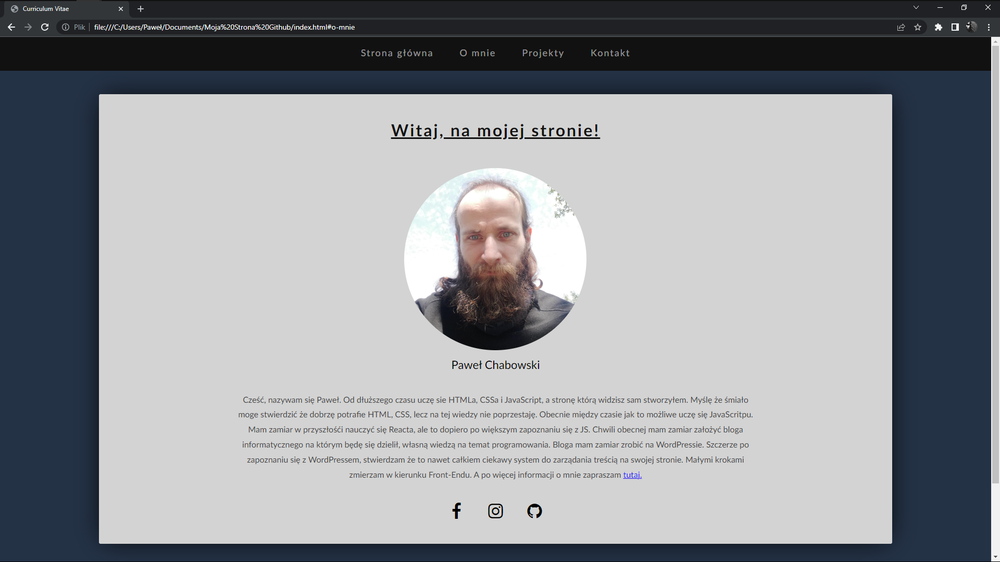
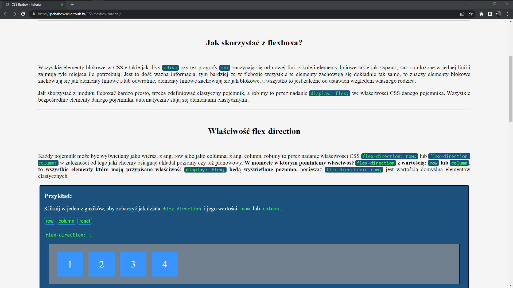
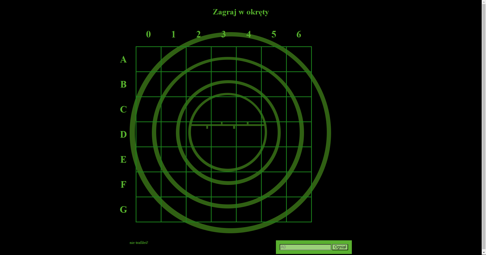
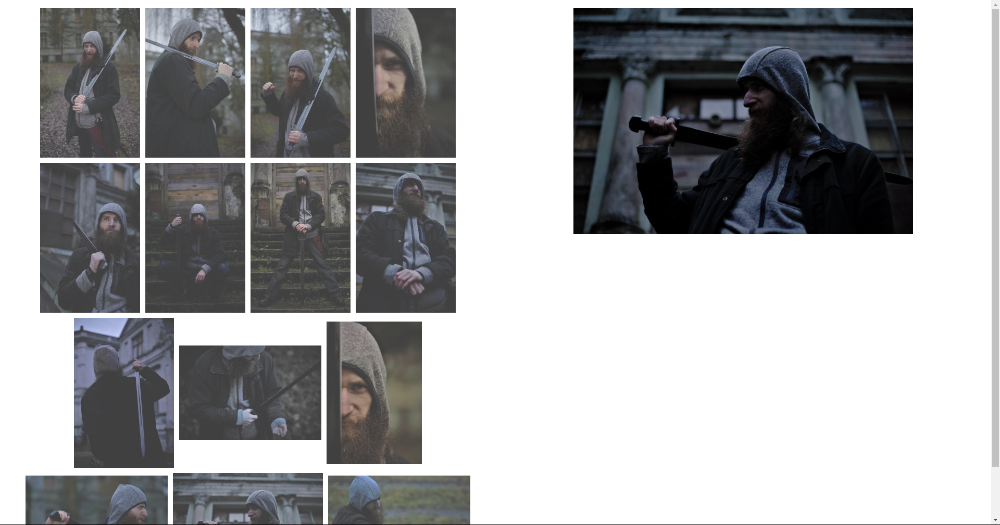

Cześć, nazywam się Paweł. Od dłuższego czasu uczę sie HTMLa, CSSa i JavaScript, a stronę którą widzisz sam stworzyłem. Myślę że śmiało moge stwierdzić że dobrzę potrafie HTML, CSS, lecz na tej wiedzy nie poprzestaję. Obecnie między czasie jak to możliwe uczę się JavaScritpu. Mam zamiar w przyszłośći nauczyć się Reacta, ale to dopiero po większym zapoznaniu się z JS. Chwili obecnej mam zamiar założyć bloga informatycznego na którym będę się dzielił, własną wiedzą na temat programowania. Bloga mam zamiar zrobić na WordPressie. Szczerze po zapoznaniu się z WordPressem, stwierdzam że to nawet całkiem ciekawy system do zarządania treścią na swojej stronie. Małymi krokami zmierzam w kierunku Front-Endu. A po więcej informacji o mnie zapraszam tutaj.
O mnie
Paweł Chabowski
Cześć, nazywam się Paweł. Od dłuższego czasu uczę sie HTMLa, CSSa i JavaScript, a stronę którą widzisz sam stworzyłem. Myślę że śmiało moge stwierdzić że dobrzę potrafie HTML, CSS, lecz na tej wiedzy nie poprzestaję. Obecnie między czasie jak to możliwe uczę się JavaScritpu. Mam zamiar w przyszłośći nauczyć się Reacta, ale to dopiero po większym zapoznaniu się z JS. Chwili obecnej mam zamiar założyć bloga informatycznego na którym będę się dzielił, własną wiedzą na temat programowania. Bloga mam zamiar zrobić na WordPressie. Szczerze po zapoznaniu się z WordPressem, stwierdzam że to nawet całkiem ciekawy system do zarządania treścią na swojej stronie. Małymi krokami zmierzam w kierunku Front-Endu.
Po za tym że uwilbiam się uczyć i rozwijać. Mam też inne zainteresowania, np. uwielbiam grać na gitarz, i zarówno tak jak przy programowaniu i przy graniu na gitarze, to i przy jednym, jak i drugim potrafię się zatracić na wiele godzin. Mówię sobie, pogram sobie chwile na gitarze, albo zaprojektuję strone. I ta chwila mija, mija i tak patrzysz na zegar i widzisz jak mineło kilka godziny, i się zastanawiasz jak ten czas mógł tak szybko minąć? przecież to była zaledwie chwila, a tu czas iść do pracy albo innymi obowiązkami się zająć.
Również po za uczeniem się i samorozwojem, lubie też iść sobie po biegać, albo przejść się na spacer. Ostanimi czasy zaczynam czytać więcej książek, a nawet też rozwiązuje sudoku, coraz częściej widzę jak rozwiązywanie sudoku pomaga przy rozwiązywaniu problemów przy programowaniu, i nie tylko przy programowaniu. Uwielbiam też czasami spisywać własne myśli i spostrzeżenia na temat życia, którymi rzadziej dzielę się na swoim obecnym, blogu o 5 Myślę że to by było już, na tyle o mnie. Dziękuję za uwage;)
Moje Projekty
Moja strona

Strone którą widzisz jest moim pierwszym projektem publiczny, który w początkowej fazie wykonałem z pomocą Bootstrapa5, HMTLa, CSSa i JavaScript. Ale w końcowej fazie wywaliłem BS5, ponieważ ten framework mi nie odpowiada pod wieloma względami, chociażby miedzy innymi takim że momentami jak chcesz cos zmienić wyglądzie strony to musisz użyć klazuli !important. I tak właśnie obecnie prezentuje się moja strona bez BS5.
CSS Flexbox - Tutorial

Jest to Polska wersja tutoriala jak korzystać z CSS flexbox i jego właściwości. Projekt jest jeszcze nieskonczony, jakby ktoś chciał pomóc to zapraszam do kontaktu:) Tu link do projektu.
Battleship.JS

Gra w Okręty - Gra jest zrobiona z książki "Rusz głową Programowanie w JavaScript" w grze dodałem możliwość oddawania strzałów z małych liter, jak i też nieco zmodifikowałem wygląd samej gry. Tu link do projektu.
MyGalleryJS

Galeria zdjęć zrobiona przez mnie, bo byłem ciekaw czy tak sie da, mam zamiar troche bardziej przy niej poskubać i zrobić ją bardziej modalną. Wszystkie zdjęcia z galerii są należa do mnie i zostały wykonane przez tego o to Pana Wojciecha. A o to link do projektu.
Kontak do mnie
Paweł Chabowski
Jeśli masz jakieś pytanie lub chciałbyś podzielić sie jakąś informacją albo zapytać o współpracę, to zapraszam do kontaktu.